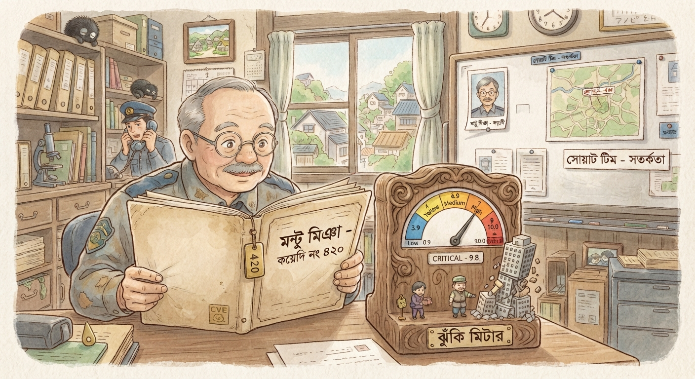

Those of us still at the beginner level in cybersecurity tend to focus mostly on the technical side of things. But if you look at senior cybersecurity professionals, there's one thing that stands out — they don't just look at technical flaws or severity scores. They care more about what a flaw would actually do to the business, or how it could turn into a real business event.
That's because CVSS (Common Vulnerability Scoring System) only tells you the technical severity of a flaw — basically a mathematical measure of how bad it is. It doesn't tell you how much that flaw actually matters to your specific business. A flaw that could destroy one company's reputation or bankrupt it might mean almost nothing to another company's operations.
Say a technical flaw scores 9.8, but it sits on an isolated test server with no important data on it — that's not really a big risk to the business. Meanwhile, a medium-severity flaw sitting in your payment gateway or core transaction system could be the biggest threat you have.
Because here's the boring but important truth: cybersecurity isn't just about stopping hackers. It's about protecting an organization's goals, people's trust, and overall safety.
When I first got into cybersecurity, there were two terms I kept hearing over and over — CVE and CVSS. At first I mixed them up, but they do completely different jobs. Put simply, a CVE is the "name" or "identity" of a problem, while CVSS is the math behind how "severe" that problem actually is.
CVE: The Unique ID Tag for a Security Flaw
CVE stands for Common Vulnerabilities and Exposures. It's basically a central database or list that gives every identified software or hardware flaw its own unique identifier. Getting from "flaw discovered" to "published CVE ID" goes through five stages:
- Reporting — a security researcher or organization that finds a flaw reports it to a CNA (CVE Numbering Authority).
- Validation — the CNA checks whether the flaw is genuinely new, or whether it's already been reported or patched.
- ID reservation — if the flaw is valid and new, a unique CVE ID gets reserved for it.
- Record creation — a detailed writeup gets built, including the weakness type (CWE), the technical impact, and the CVSS vector.
- Publication — the record finally goes public, so people everywhere can find it in databases like the NVD (National Vulnerability Database), stay alert, and dig into further research.
CVSS: The Scoring System
So now you know how to identify a flaw — but how dangerous is it, really? That's what CVSS (Common Vulnerability Scoring System) tells you. It's basically a calculation built from a handful of metrics. The score runs from 0.0 to 10.0, and gets grouped into severity bands:
- Low: 0.1 – 3.9
- Medium: 4.0 – 6.9
- High: 7.0 – 8.9
- Critical: 9.0 – 10.0
Three main groups of metrics go into that score:
- Base Metrics — the intrinsic qualities of the flaw itself, the stuff that doesn't change over time or with environment. This splits into Exploitability (how easy the attack is) and Impact (how much damage a successful attack does to confidentiality, integrity, and availability).
- Threat Metrics — called Temporal Metrics in older versions. This looks at how things shift over time, like whether ready-made exploit code is floating around for that flaw right now.
- Environmental Metrics — this adjusts the score for your specific organization's context. It's really the bridge to understanding business risk.
CVE vs. CVSS — The Story of Montu Mia
Here's a way to picture the difference. Say a prisoner named Montu Mia escapes from a huge jail. His prisoner number or name — that's the CVE. It's how every jail and police file in the country uniquely identifies him.
The CVSS score is a rating of how dangerous Montu Mia actually is. Is he a small-time pickpocket, or a terrifying bank robber or mafia boss? Based on that rating, the police decide whether sending one ordinary constable is enough to catch him, or whether they need to send in a full SWAT team.

Base Metrics: The Flaw's Built-In Traits
The Base Metrics group in the CVSS framework captures the flaw's built-in traits — the ones that don't shift with time or environment. It splits into two parts:
1. Exploitability Metrics — How Easy the Attack Is
- Attack Vector (AV): Can the attacker come in remotely over the internet, or do they need to be physically at the device?
- Attack Complexity (AC): How much technical difficulty or special circumstance does the attack need to succeed?
- Privileges Required (PR): Does the attacker already need some level of user or admin access?
- User Interaction (UI): Does the attack need a person to do something, like click a malicious link?
2. Impact Metrics — Damage to the CIA Triad
- Confidentiality (C): Data getting exposed.
- Integrity (I): Data getting corrupted or changed without permission.
- Availability (A): A system or service going down entirely.
Threat Metrics: What Changes Over Time
Then come the Threat Metrics (formerly Temporal Metrics), which look at things that change over time — exploit maturity, basically. Is there a ready-made exploit or simple automated tool hackers can use right now for this flaw? If nothing like that exists yet, then even a technically severe flaw poses much less immediate risk to your business.
Environmental Metrics: Where Business Risk Lives
All of this is technically important, but the real business question is asset importance. Say a critical flaw sits on your public menu server — the one that just shows a list of food or services. Even if confidentiality gets broken there, your business doesn't really lose much. But the exact same flaw sitting in your customer database or payment gateway could bankrupt the whole company.
This is where the strongest part of the CVSS framework comes in — Environmental Metrics. This is what actually connects the technical score to business risk, through two things:
- Security Requirements: How critical is confidentiality, integrity, and availability for that particular system, in your business? (A customer database obviously needs far stronger security than a public menu server.)
- Modified Base Metrics: If your organization has specific defenses in place — a firewall, network isolation, whatever — that make the attack harder to pull off, you can lower the base score to get a real-world risk figure that actually reflects your situation.
Blood Test Report vs. A Specialist's Advice
Here's a medical comparison that makes this easier to grasp. A CVSS score is like a blood test report — it tells you how much of something is in your body and whether that falls within the normal range.
Say someone's using anabolic steroids for bodybuilding. Their liver enzymes — ALT (SGPT) and AST (SGOT), normally under about 40–50 U/L — could easily shoot up to 100, 500, or higher. Looking at that lab report, an ordinary person might panic (which is basically what happens when people see a CVSS score of 9.8 and freak out).
But a sports medicine specialist would look at the same report and say: "This is expected for someone on this training regimen. It's elevated, yes — but it's not dangerous given your specific context." That's exactly what a senior security professional does with CVSS scores. They look at the number, then look at your environment, and give you an answer that actually applies to your situation.
Putting It All Together
Here's a quick summary of the two terms and how they relate:
- CVE = the unique identity of a flaw (its "name tag").
- CVSS = the severity score of that flaw (its "danger rating").
- Business Risk = what CVSS becomes when you factor in your organization's actual context, asset importance, and existing defenses.
As a security practitioner — beginner or senior — the goal isn't just to memorize CVE IDs or chase high CVSS scores. It's to understand what a flaw means in the context of your specific environment, and prioritize accordingly. That's the mindset shift that separates a technician from a true security professional.